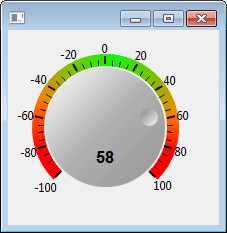

A scientific and engineering widgets library such as graph, meter, gauge and knob for SWT and GEF applications.
SWT XYGraph
A scientific and engineering widgets library such as graph, meter, gauge and knob for SWT and GEF applications.
SWT XYGraph can be downloaded from Google Code. There are two versions of SWT XYGraph: Pure Java version and RCP_RAP version. Pure Java version can be used in all java applications including RCP applications. RCP_RAP version can be used for RCP applications and RAP applications. So if you are not creating a RAP application, you should use the Pure Java version.
For pure java applications, add org.csstudio.swt.xygraph.jar to your project build path. It also requires following jar files:
These jar files are generally available with your eclipse installation under eclipse/plugins folder. These jars are also included in project org.csstudio.swt.xygraph.pureJavaTest in git repository. Add these jars to your project build path. Now you are ready to start!
If you don't have org.eclipse.draw2d in your eclipse/plugins folder, you should also install draw2d plugin. Draw2D is part of Eclipse GEF project, If you don't have GEF installed in your eclipse, please install it following instruction here: http://www.eclipse.org/gef/downloads.php
For Eclipse plugin development, add org.csstudio.swt.xygraph.jar to your target platform or project build path. You also need to make sure you have org.eclipse.draw2d in your target platform. Add org.csstudio.swt.xygraph and required jars listed above as plugin dependencies (If you already have org.eclipse.ui and org.eclipse.core.runtime in dependencies, those plugins are implicitly included, so you don't need to add them again.).
Please skip this section if you are not using RCP_RAP version of SWT_XYGraph.
RCP_RAP version of SWT XYGraph aims to use SWT XYGraph in both RCP and RAP application with single sourcing.
org.csstudio.swt.xygraph is the base plugin for both RCP an RAP applications.
org.csstudio.swt.xygraph.rcp is the fragment for RCP applications. It should not be included in your RAP application.
org.csstudio.swt.xygraph.rap is the fragment for RAP applications. It should not be included in your RCP application.
So you should add org.csstudio.swt.xygraph and org.csstudio.swt.xygraph.rcp to your RCP target platform.
Add org.csstudio.swt.xygraph and org.csstudio.swt.xygraph.rap to your RAP target platform.
As described in the class diagram below, a complete XY Graph is composed of Legend, Title, Axes, PlotArea. The PlotArea will include Traces, Grids and Annotations. An XYGraph can also be wrapped into a ToolbarArmedXYGraph, which provides a toolbar for the interactive operations functionality.

There are two interfaces IDataProvider and ISample in the class diagram,
which means the user can also implemented there own data provider or sample.
This gives the possibilities to implement a different data provider
with different data source or data storage structure for special applications,
For example, the data source in the data provider could be from user input, database or files etc,.
The storage structure could be array, queue, circular buffer or bucket buffer etc,.
A default data provider CircularBufferDataProvider and sample Sample
have been provided with the XYGraph plugin.
Just few simple steps, you can create your first XYGraph with a trace added.
See SimpleExample.java
Step 1. Establish the bridge between Draw2D and SWT.
The XY Graph is a Draw2D figure, so if you want to display an XY Graph as an SWT widget, you have to create the bridge between Draw2D and SWT:
final LightweightSystem lws = new LightweightSystem(shell);
The shell can also be replaced with an SWT Canvas.
Step 2. Create a new XYGraph.
XYGraph xyGraph = new XYGraph();
xyGraph.setTitle("Simple Example");
Step 3. Set it as the content of LightwightSystem.
lws.setContents(xyGraph);
Step 4. Create a trace data provider,
which will provide the data to the trace. Here we use CircularBufferDataProvider which
is a default provided data provider in XY Graph package. You can also create your own data provider by implementing
the interface IDataProvider .
CircularBufferDataProvider traceDataProvider = new CircularBufferDataProvider(false);
traceDataProvider.setBufferSize(100);
traceDataProvider.setCurrentXDataArray(new double[]{10, 23, 34, 45, 56, 78, 88, 99});
traceDataProvider.setCurrentYDataArray(new double[]{11, 44, 55, 45, 88, 98, 52, 23});
Step 5. Create a trace and set its properties.
Trace trace = new Trace("Trace1-XY Plot",
xyGraph.primaryXAxis, xyGraph.primaryYAxis, traceDataProvider);
trace.setPointStyle(PointStyle.XCROSS);
Step 6. Add the trace to xyGraph.
xyGraph.addTrace(trace);
Congratulations! You just created your first XYGraph which has the basic elements: title, axes, trace and legend.

Once you have finished the first simple example, you have already mastered 90% of usage of SWT XYGraph! So now you can just learn from examples!


In this example, the XY graph is dynamically updated by a timer. It also shows how to add key listeners to perform interactive operations programmatically.

Intensity Graph draw a 2D array data based on a color map.
